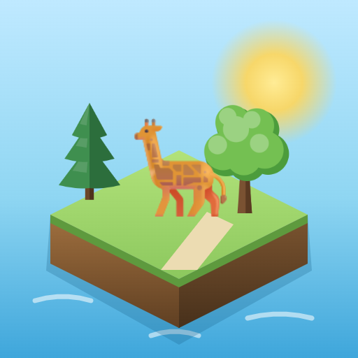

Sunny Hill Zoo
Your own zoo on a little island
On Sunny Hill you build your zoo step by step: lay out enclosures, draw paths, welcome new animals and keep your visitors happy. The nicer the zoo, the more stars – and the more guests. No time pressure at all.
“My daughter loves building games. But in almost every one, after a short while the only way forward was paying real money. So I built her a zoo of her own – one where you can just play.”
– How the zoo came to be
Honest label pastfive
- Price
- free
- Ads
- none
- In-app purchases
- none
- Data collected
- none
- Play without internet
- yesInternet only for the update check (can be turned off)
- Languages
- English, German
- Suitable for
- ages 6+
- Device
- Android 7 or newer
A closer look
What awaits you
- Lots of animalsFrom foxes to giraffes – with males, females and breeding pairs.
- Fable worldWith a little luck, even mythical creatures move in.
- Pet the animalsEvery animal has its own face.
- AttractionsPetting zoo, lookout tower, park railway and aquarium.
- UpgradesEnlarge enclosures, improve stands, move and rotate everything for free.
- SeasonsWith calm music matching the season and time of day.
- Photos & certificateSave lovely moments straight to your gallery.
- Easy startA pointing hand guides you through the first tasks – can be turned off.
Free download
For Android phones and tablets. No sign-up.
Download the app (APK)How to install
The app isn't on the Google Play Store (yet) – you get it directly from this website:
- Download: Open this page on your phone and tap “Download the app” above. The file Tierpark.apk is saved.
- Open: Tap the downloaded file (in the notification or in your “Downloads” folder).
- Allow: The first time, Android asks whether your browser may install apps. Tap Settings → Allow from this source, then go back.
- Install: Tap Install. Done – the zoo is now with your other apps.
Google Play Protect may show “Unknown app” or “Unknown developer”. That's normal for apps from outside the Play Store – tap More details → Install anyway.
Updates
At most once a day the app checks whether a new version is available and asks you. You can also check yourself: ☰ Menu → ℹ️ About the game · Updates → 🔄 Check for updates. Simply install the new version over the old one – your zoo is kept.
Your progress
Your progress is stored only on your device. To back it up or move it to a new phone: ☰ Menu → 💾 Back up (e.g. to Google Drive) and on the new phone ☰ Menu → 📂 Load.